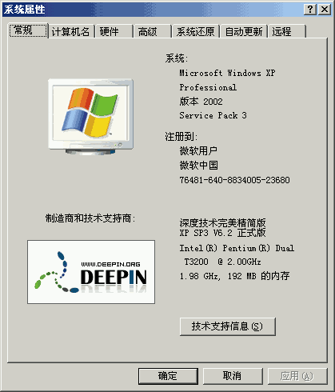
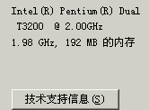
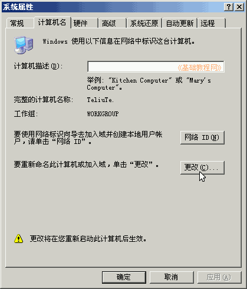
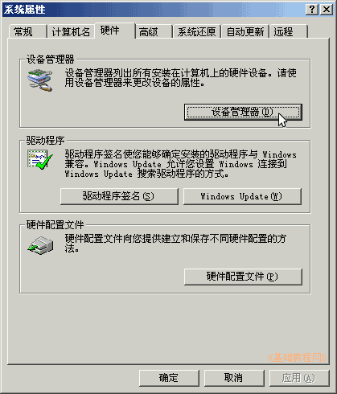
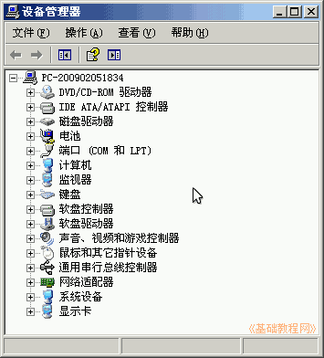
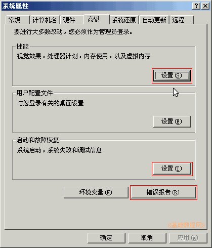
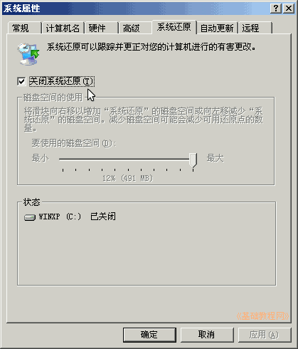
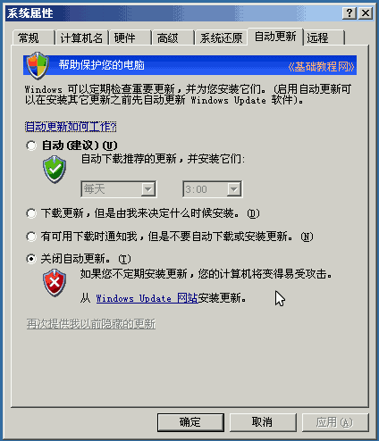
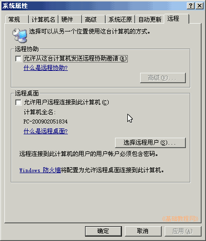

控制面板基础教程
作者：TeliuTe 来源：基础教程网
系统属性里包含系统的各项信息，也可以检查硬件驱动安装是否正确，下面我们来看一个练习；
1、系统
1）进入经典视图，点“系统”图标出来一个面板；
2）系统属性中包括计算机的各项信息，有硬件、软件和启动设置等；

2、属性和选项
1）在常规的下边，可以看到计算机的CPU速度和内存大小；

2）在“计算机名”标签里，点“更改”可以重命名计算机，点“网络ID-本机用于家庭”，可以加入到局域网中；

3）在“硬件”标签里，点“设备管理器”按钮，可以查看系统安装的硬件信息，

如果里面有黄色的问号或感叹号，表示驱动程序不正确；

4）在“高级”标签里，可以分别设置虚拟内存、启动列表、错误报告等；

5）在“系统还原”标签中，如果你不怎么使用它，可以打勾关闭，节省一定的磁盘空间；

6）在“自动更新”标签里，一般不用改，如果你使用其他更新方式(比如安全卫士)，可以关闭自动更新；

7）“远程”标签里，为了安全，一般去掉里面的勾，不使用系统自带的远程功能；

本节学习了系统选项的基础知识，如果你成功地完成了练习，请继续学习下一课内容；
本教程由86团学校TeliuTe制作|著作权所有
基础教程网：http://teliute.org/
美丽的校园……
转载和引用本站内容，请保留版权信息和本站链接。